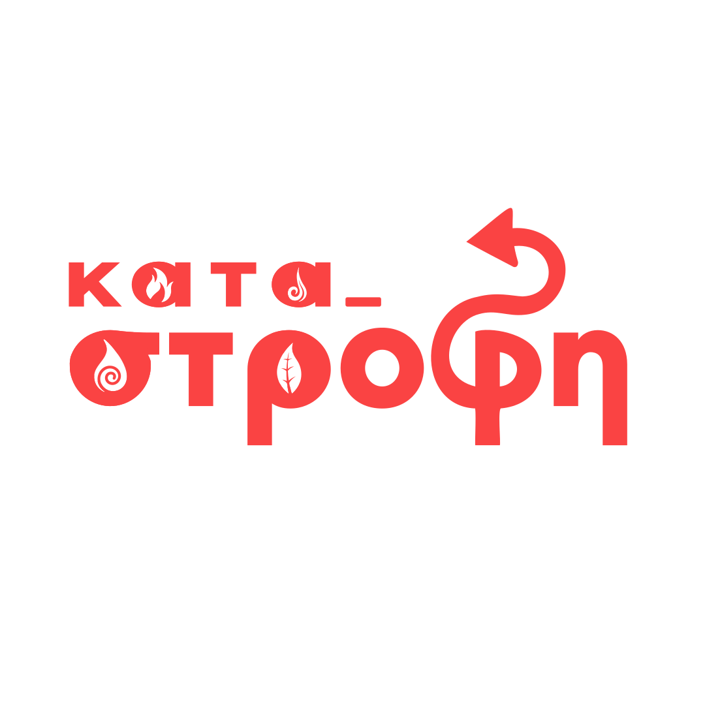

Εκκένωση νομού Ιτέας
Πολιτική Προστασία, 1(3)12
Η φωτιά έχει εξαπλωθεί και στον αέρα, το σενάριο του Οπενχάιμερ έγινε πραγματικότητα. Βρείτε πηγάδι Βορνό και πέτρο και πηδήχτε μέσα, μην περιμένετε τίποτα.
20:44-11/11
Εγκλωβισμός οχημάτων
Μπλε στρουμφάκια, 200
Στην π. οδό Λαρίσης-Ιτέας υπάρχει μποτιλιάρισμα, σύντεκνος είχε 5 λίτρα πρωτοστάλαγμα και πήρε φόκο το αγροτικό. Παρακάμψτε μέσω ποταμού Εννιπέα.
16:44-11/11